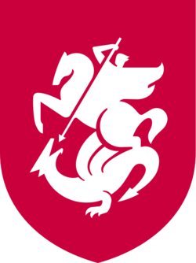
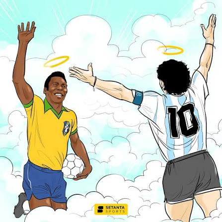
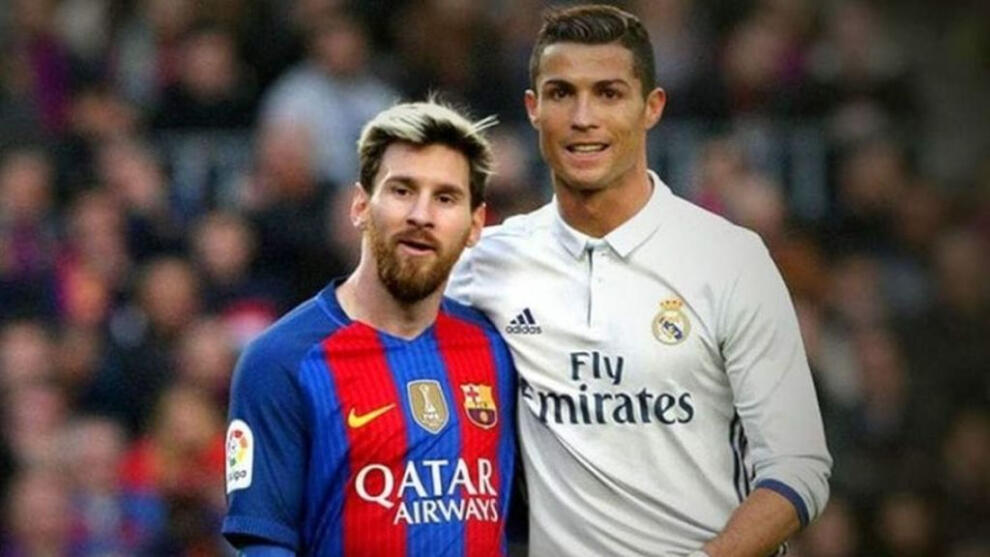
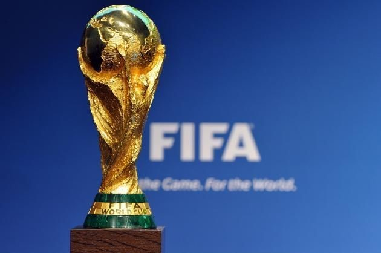

ჩემი ჰობი — ფეხბურთი
ფეხბურთი ჩემი საყვარელი ჰობია და თავისუფალ დროს ხშირად ვთამაშობ მეგობრებთან ერთად. ეს სპორტი მხოლოდ ფიზიკურ აქტივობას არ ნიშნავს — ის მასწავლის გუნდურ მუშაობას, პასუხისმგებლობასა და მიზნისკენ სწრაფვას. ფეხბურთის ყურებაც ძალიან მიყვარს და განსაკუთრებული ინტერესით ვადევნებ თვალს საერთაშორისო ტურნირებსა და მნიშვნელოვან მატჩებს. რა თქმა უნდა, ჩემთვის ყოველთვის პირველ ადგილას საქართველოს ნაკრები და ქართველი ფეხბურთელები არიან, რომელთაც ყოველთვის დიდი ემოციებით ვგულშემატკივრობ. საქართველოს შემდეგ განსაკუთრებით მომწონს ბრაზილიის ნაკრები თავისი ლამაზი, ტექნიკური და შემტევი თამაშის სტილის გამო. ზოგადად სპორტს ჩემში მნიშვნელოვანი ადგილი აქვს დაკავებული. ფეხბურთი მაძლევს ენერგიას, მოტივაციას და უამრავ სასიამოვნო მოგონებას, რის გამოც ის ჩემი ცხოვრების მნიშვნელოვანი ნაწილია.



